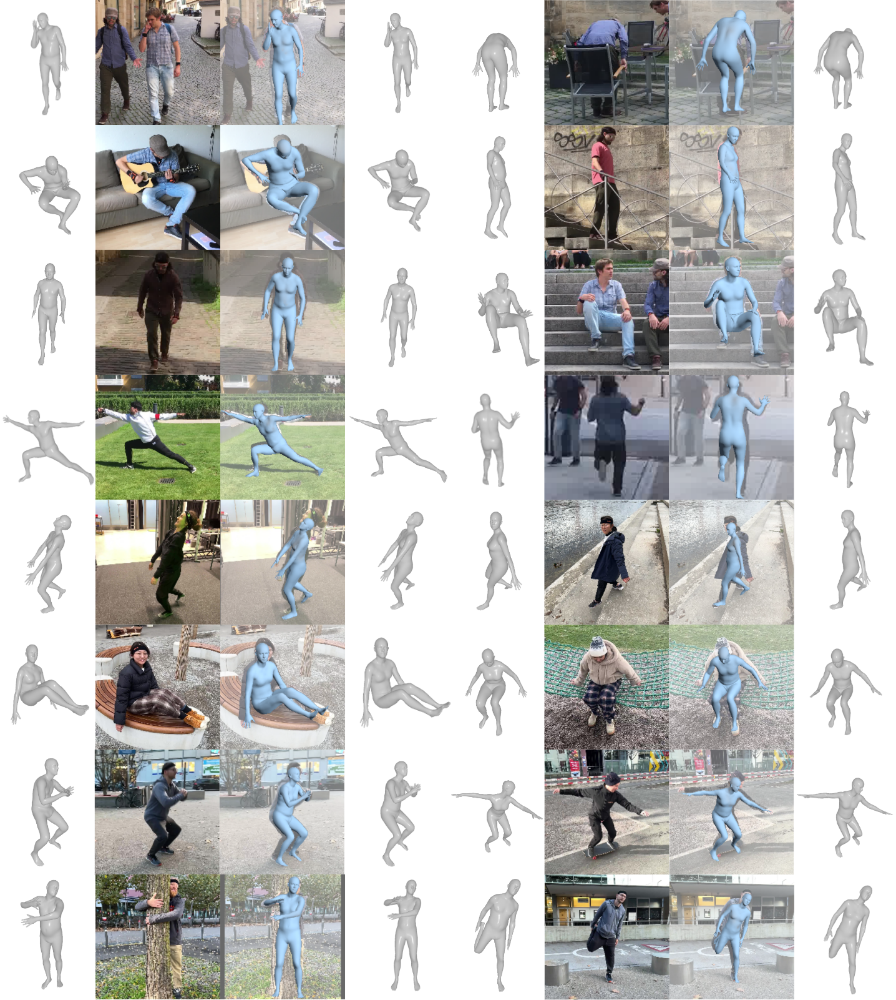
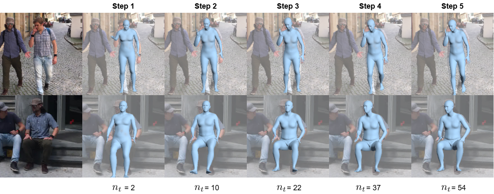

|
| |
Human Mesh Recovery (HMR) from a single RGB image is a highly ambiguous problem, as an infinite set of 3D interpretations can explain the 2D observation equally well. Nevertheless, most HMR methods overlook this issue and make a single prediction without accounting for this ambiguity. A few approaches generate a distribution of human meshes, enabling the sampling of multiple predictions; however, none of them is competitive with the latest single-output model when making a single prediction. This work proposes a new approach based on masked generative modeling. By tokenizing the human pose and shape, we formulate the HMR task as generating a sequence of discrete tokens conditioned on an input image. We introduce MEGA, a MaskEd Generative Autoencoder trained to recover human meshes from images and partial human mesh token sequences. Given an image, our flexible generation scheme allows us to predict a single human mesh in deterministic mode or to generate multiple human meshes in stochastic mode. Experiments on in-the-wild benchmarks show that MEGA achieves state-of-the-art performance in deterministic and stochastic modes, outperforming single-output and multi-output approaches.
 |
MEGA, a multi-output HMR approach based on self-supervised learning and masked generative modeling of tokenized human meshes. MEGA relies on Mesh-VQ-VAE to encode/decode a 3D human mesh to/from a set of discrete tokens.
Our training process unfolds in two steps: (1) Firstly, akin to (vector quantized) masked autoencoders, we pre-train MEGA in a self-supervised manner to reconstruct human mesh tokens from partially visible inputs. This leverages large amounts of motion capture data without the need for paired image data. (2) Subsequently, for HMR from RGB images, we train MEGA to predict randomly masked human mesh tokens conditioned on image feature embeddings. During inference, we begin with a fully masked sequence of tokens and generate a human mesh conditioned on an input image.
In deterministic mode, MEGA predicts all tokens in a single forward pass, ensuring speed and accuracy.
|  |
In stochastic mode, the generation process involves iteratively sampling human mesh tokens, enabling MEGA to produce multiple predictions from a single image.
|  |
We visualize the predictions for intermediate steps in stochastic mode.
 |
We visualize the standard deviation of the 3D location of each vertex.
@inproceedings{fiche2025mega,
title={MEGA: Masked Generative Autoencoder for Human Mesh Recovery},
author={Fiche, Gu{\'e}nol{\'e} and Leglaive, Simon and Alameda-Pineda, Xavier and Moreno-Noguer, Francesc},
booktitle={IEEE/CVF Conference on Computer Vision and Pattern Recognition ({CVPR})},
year={2025}
}